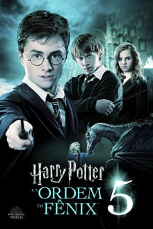

 Diretor: David Yates
Escritores: Steve Kloves,J.K. Rowling
Elenco: Daniel Radcliffe,Rupert Grint,Emma Watson
Origem: Reino Unido / EUA
Ano: 2007
Sinopse: Harry Potter (Daniel Radcliffe) retorna à Escola de Magia e Bruxaria de Hogwarts, para cursar o 5º ano letivo. Logo ele descobre que boa parte da comunidade bruxa foi levada a acreditar que o retorno de Voldemort (Ralph Fiennes) foi uma mentira inventada por Harry, o que põe sua credibilidade em dúvida. Além disto, o Ministro da Magia Cornélio Fudge (Robert Hardy) impõe à escola a presença de Dolores Umbridge (Imelda Staunton), que torna-se a nova professora de Defesa Contra as Artes das Trevas. Acontece que as aulas de Umbridge, apesar de aprovadas pelo ministério, abrangem apenas temas amenos, deixando os alunos despreparados para os perigos dos dias atuais. Incentivado por seus amigos Rony (Rupert Grint) e Hermione (Emma Watson), Harry decide encontrar-se em segredo com um grupo de estudantes, visando a prática de magia. O grupo se autodenomina como a "Armada de Dumbledore", mas logo passa a ser vista como uma ameaça ao próprio Ministério da Magia..